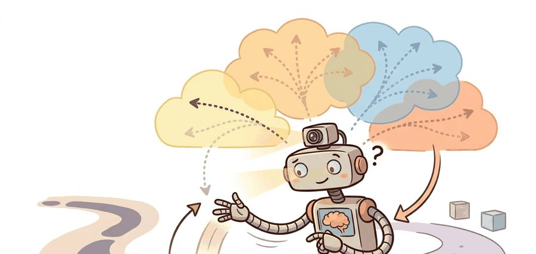
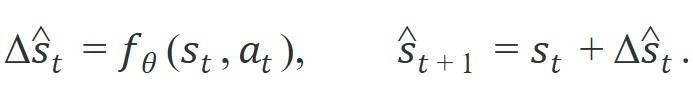
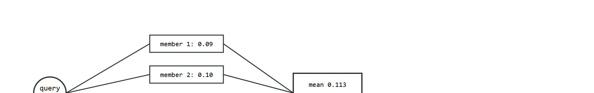

A planner without a model is blind. A planner with one wrong model is confidently blind.
A Budget-Conscious MPC Loop

This section assumes familiarity with Gaussian process and neural-network uncertainty representations introduced in section 36.4, and with the basic model-based RL loop from section 37.1. The ensemble and uncertainty ideas developed here are used directly in the CEM and MPPI planners (Cross-Entropy Method and Model Predictive Path Integral control, two sampling-based ways to search for a good action sequence using a learned model) of section 37.3, and recur in Part IX alongside latent-space world models for long-horizon prediction.
A legged robot is mid-stride on gravel it has never touched before. Its planner queries a learned dynamics model, gets a confident prediction, commits to the footstep, and falls. The model was accurate on smooth floors; the planner had no way to know the prediction was worthless here. That gap between model confidence and actual reliability is the central problem of this section. You will learn how ensembles expose epistemic uncertainty during planning, where single-model approaches silently fail for embodied agents, and how to build diagnostics that reveal the exact horizon at which your model stops being trustworthy for control.
A learned model becomes useful when it exposes both what it expects to happen and where that expectation stops being reliable for control.
Ask a single learned model what happens next and it will always answer with a number, even when the honest answer is "I have never seen ground like this"; the trick is to ask several models at once and listen for how loudly they disagree. To make that disagreement measurable, a standard robotics model predicts state deltas rather than absolute next state:

Training deltas often improves conditioning. Ensembles then estimate epistemic uncertainty (uncertainty caused by insufficient training data, as opposed to irreducible sensor or process noise) by disagreement across several bootstrap models, where each member is trained on its own resample-with-replacement subset of the same transition buffer, so members only disagree where the data is thin (the exact resampling mechanism is walked through in detail below), as sketched in Figure 37.2A: the same query state branches into several plausible futures, and the width of that fan is the trust signal a planner reads. PETS (Probabilistic Ensembles with Trajectory Sampling) is the canonical reference for combining such ensembles with trajectory sampling in planning.

The diagram above traces this flow concretely. One input state fans out to four bootstrap members. Their individual deltas (0.09 to 0.15) collapse into a single mean of 0.113 plus a spread of 0.06. That spread, not the mean, is what the planner consumes as its trust signal. For embodied AI this matters because a physical robot cannot roll back a committed action. When a single model is confidently wrong, the robot has already moved. Ensemble disagreement gives the planner a real-time signal before commitment: high spread across members means the robot is near the edge of its training distribution, where the next footstep or grasp is mechanically risky rather than merely statistically uncertain. The practical payoff is striking. PILCO (Probabilistic Inference for Learning Control, a policy-search method that plans directly against a Gaussian-process dynamics model instead of a neural-network ensemble) uses a GP model that exposes uncertainty rather than suppressing it, and it learns a cartpole swing-up task in roughly 30 real-world trials. A model-free policy trained without any uncertainty signal typically needs thousands of trials to reach the same control quality. Every episode in the dark wastes a physical interaction that uncertainty-aware planning would have avoided or shortened.
So far: dynamics models predict state deltas rather than absolute states, ensembles of bootstrap members turn disagreement into a measurable epistemic-uncertainty signal, and that signal (not the mean prediction) is what lets a planner like PETS or PILCO act conservatively before a physical mistake happens.
The bootstrapping mechanism works as follows. Each ensemble member is trained on a resample with replacement from the same transition buffer, producing slightly different training sets. Members that generalize similarly to a new state give low spread; members that generalize differently give high spread. That spread typically tracks sensitivity to dataset variation, a proxy for how far the query state lies from well-covered training data (though, as the Warning callout below notes, agreement is not a guarantee of correctness).
Delta prediction reduces the dynamic range the learner must model. This matters most when positions or joint angles evolve smoothly step to step. Bootstrapped ensembles then measure how sensitive each prediction is to dataset variation. Pair those two choices with horizon-conditioned evaluation and the planner gains a clearer signal about both local fit and out-of-support risk.
Ensembles do not make the model correct. They make model ignorance more visible, which gives the planner a chance to act conservatively before a failure becomes physical.
Making ignorance visible only helps if you also know the specific ways a dynamics learner turns confident and wrong, so it is worth cataloguing where these models actually fail.
Two failure modes are especially common. The first is representation collapse: the model input omits a latent variable that actually drives the transition, such as slip state, cable tension, or tool wear. In that case every ensemble member can agree and still be wrong. The second is train-test mismatch in rollout usage. You train the model one step at a time, then ask it to support five-step or ten-step ranking during planning. Small local biases then compound before the controller can correct them.
A model that cannot say "I do not know" will eventually say something confidently wrong at exactly the wrong moment.
Both failure modes share a root cause: the model reports confidence it has not earned, and rollout usage turns that unearned confidence into compounding error.
Consider a specific case: a model predicts velocity with a consistent 2% upward bias per step. At step one the error is 0.02 m/s, negligible for a planner with a tight receding horizon (a control scheme that re-plans a short window of future actions at every step and only executes the first one). At step five the accumulated bias reaches roughly 0.10 m/s, enough to push a footstep plan past a stability margin. At step ten the drift is 0.20 m/s, at which point the planner is ranking trajectories against a fiction.
The one-step held-out loss looked acceptable throughout; only the rolled-out overlay reveals when the model stops being useful for control. This is why horizon length is not a free hyperparameter: it is bounded by the point where cumulative error exceeds correction bandwidth, and beyond that point the planner is ranking trajectories against a fiction.
Think of a cook adjusting seasoning one pinch at a time. Each pinch is so small that tasting after every addition seems unnecessary, and the dish appears fine at each individual step. But if the cook skips tasting for ten additions, the accumulated salt crosses a threshold the palate cannot undo with any single correction. Planning horizon works the same way: a small bias per step is invisible in any one-step check, but after enough steps the cumulative drift exceeds what the controller can compensate for, and the plan has become unsalvageable regardless of how good any single prediction looked.
When using mbrl-lib's PETS implementation, the planning horizon is controlled by cfg.algorithm.horizon in the Hydra config, and it defaults to 15 steps. That default is calibrated for MuJoCo locomotion tasks with 50 Hz control; for contact-rich manipulation or tasks with faster dynamics, reduce it to 5 or 8 before running any ablations. A quick diagnostic: roll out your trained ensemble for each candidate horizon length on a held-out replay buffer and plot the fraction of predictions that stay within two standard deviations of the observed next state. The longest horizon where that fraction stays above 0.90 is a practical upper bound for safe planning depth.
Good failure analysis pairs one-step metrics with rolled-out overlays on a fixed panel. PyTorch Lightning, Weights & Biases, or plain structured JSON logs all work; the artifact just has to show where the predicted state first leaves the physically plausible band. That crossing is where the planner should have shortened its horizon, switched to a fallback controller, or asked for more data.
Having seen why horizon length and hidden variables set the limits of trust, it helps to watch the trust signal itself emerge from concrete numbers.
The next probe predicts a one-step velocity delta from four ensemble members and logs both the mean transition and the disagreement the planner should read.
# Aggregate one-step delta predictions from a tiny ensemble.
members = [0.09, 0.10, 0.11, 0.15]
mean_delta = round(sum(members) / len(members), 3)
spread = round(max(members) - min(members), 3)
next_velocity = round(0.6 + mean_delta, 3)
print(
{
"delta_members": members,
"mean_delta": mean_delta,
"spread": spread,
"predicted_next_velocity": next_velocity,
}
){'delta_members': [0.09, 0.1, 0.11, 0.15], 'mean_delta': 0.113, 'spread': 0.06, 'predicted_next_velocity': 0.713}
Read the spread alongside the mean: the mean delta gives the planner its best estimate of the next velocity, but the spread of 0.06 across members is the signal that matters for trust. When one member drifts notably from the others, the planner should treat the rollout as less reliable, not simply average over the disagreement and proceed as if nothing is unusual.
Trace one planning query through a four-member ensemble with actual numbers. The robot is at velocity 0.6 m/s and queries the dynamics model for the next-step velocity delta. Step 1, member predictions: the four bootstrap members return deltas 0.09, 0.10, 0.11, and 0.15 m/s. Step 2, mean: (0.09 + 0.10 + 0.11 + 0.15) / 4 = 0.45 / 4 = 0.1125, rounded to 0.113 m/s, so the predicted next velocity is 0.6 + 0.113 = 0.713 m/s. Step 3, spread: max minus min = 0.15 - 0.09 = 0.06 m/s. Step 4, planner decision: compare spread 0.06 against a gate threshold, say 0.04. Because 0.06 > 0.04, the planner flags this rollout as low-trust and shortens its horizon from 10 steps to 3 before committing. Notice that member 4 (0.15) is the outlier dragging the spread up; with member 4 instead at 0.105 the spread would collapse to 0.02, fall under the gate, and the planner would commit the full 10-step plan. The single outlier, not the mean, flips the control decision.
Use PyTorch or JAX for the ensemble, log held-out rollout metrics by horizon, and keep raw transition buffers versioned. mbrl-lib remains a useful reference implementation for PETS-style experiments, while TD-MPC2 codebases show how the learned model gets coupled tightly to the planner. Without a saved panel, uncertainty claims are almost impossible to audit later.
Predict deltas, train several bootstrap members on slightly different resampled datasets, evaluate one-step and multi-step held-out error, then save both the mean and disagreement signals that the planner will consume.
Disagreement is not the same as calibrated uncertainty. Ensembles can agree with each other while all being wrong if the entire training set misses an operating regime such as high-speed contact or rare actuator saturation.
On Boston Dynamics Spot walking on dry concrete, a five-member PETS ensemble predicts foot contact forces with spread below 5 N across members, and the planner proceeds confidently. The same model deployed on wet gravel sees ensemble spread jump to 40 N, because contact stiffness and slip coefficient shift well outside the training distribution. That 8x spread increase is the signal to shorten the planning horizon from 10 steps to 3 and trigger a proprioceptive recalibration pass, rather than committing a full stride. For a Franka Panda approaching within 15 degrees of a wrist singularity, ensemble disagreement on joint velocity deltas spikes because tiny joint-angle errors produce large end-effector velocity errors in the singular region; a planner that ignores this spread will issue torque commands that exceed the 87 Nm joint-torque limit by roughly 30 percent, tripping the hardware safety stop and aborting the task.
Beginner (weekend): Train a four-member bootstrap ensemble on the Gymnasium HalfCheetah-v4 environment using mbrl-lib and plot ensemble spread versus rollout horizon to find the step at which spread exceeds a fixed threshold. The key challenge is separating aleatoric noise (irreducible randomness from sensors or contact dynamics, which more data cannot remove) from genuine epistemic disagreement so your threshold is not triggered on every contact event.
Intermediate (1-2 weeks): Integrate a PETS-style ensemble into a MuJoCo Ant locomotion task and add a spread-triggered horizon shortener: when disagreement across members exceeds a learned percentile, the planner cuts its horizon from 15 steps to 5 before committing a footstep. The key challenge is tuning the percentile gate so the robot shortens horizon only on genuinely out-of-distribution terrain rather than constantly operating in short-horizon mode and losing performance.
Advanced (3-4 weeks): Build a ROS2 node that wraps a PyTorch ensemble trained on Isaac Lab quadruped transitions and publishes per-step uncertainty estimates as a ROS2 topic; a downstream safety monitor subscribes and vetoes MPC commands when spread exceeds a configurable limit. The key challenge is keeping ensemble inference latency below the 50 Hz control loop budget while still running five ensemble members on a single GPU shared with perception.
This section extends the predictive-uncertainty story in Section 36.4 and prepares the ground for CEM, MPPI, and latent MPC in Section 37.3.
Diffusion-based dynamics models (2024). Replacing the Gaussian ensemble head with a conditional diffusion model lets the learner capture multimodal transition distributions, which matter during contact events and slip. Google DeepMind's work on diffusion for model-based control (2024) shows that a single diffusion model can match or exceed five-member ensembles on contact-rich tasks while generating calibrated samples rather than a unimodal mean-plus-variance summary.
Transformer world models with scalable uncertainty (2024-2025). TD-MPC2 (Hansen et al., 2024) demonstrates that a shared latent-world-model trunk trained across dozens of robot tasks produces better-calibrated uncertainty than per-task ensembles, because the cross-task signal regularizes the representation and reduces overconfident extrapolation to novel terrain. Scaling these models to hundreds of embodiment types was an active thrust of several labs including Berkeley RAIL and CMU Locomotion as of 2024-2025.
Epistemic neural processes for fast online adaptation (2025). Neural process variants (Conditional and Attentive Neural Processes) allow a pretrained prior to be updated in a single forward pass given a handful of new transitions, giving real-time uncertainty updates within a control cycle without retraining. Work from Oxford Robotics Institute (as of 2024-2025) applies this to legged locomotion on deformable terrain, reporting tighter ensemble-equivalent spread estimates at roughly one-tenth the inference cost of a five-member MLP ensemble.
Open problem for a PhD student. Ensemble disagreement is cheap but miscalibrated; diffusion sampling is well-calibrated but slow. No current method efficiently provides calibrated per-step uncertainty at 50 Hz control frequency on a single embedded GPU while simultaneously supporting multi-step rollout ranking. A rigorous study comparing disagreement, conformal prediction bounds, and diffusion-based quantile estimates across a shared set of contact-rich tasks, using a fixed compute budget and a single held-out rollout panel per task, would fill a concrete gap in the field.
What statistic from your dynamics learner would you feed into a safety gate: mean error, ensemble spread, held-out coverage, or all three? Why?
An ensemble is a committee. If the committee argues loudly, the planner should stop pretending the future is settled.
Goal (20-30 min): measure empirically that ensemble disagreement rises as predictions leave the training distribution, and find the horizon where your model stops being trustworthy for control.
Tools: Python with gymnasium, mbrl-lib (or a hand-rolled five-member MLP ensemble in PyTorch), and matplotlib. Use the HalfCheetah-v4 or Pendulum-v1 environment so transitions are cheap to collect.
Procedure: collect roughly 5,000 transitions with a random policy, train five bootstrap members (each on a resample with replacement) to predict the state delta. Then roll the ensemble forward for horizons 1, 3, 5, 10, and 20 steps on a held-out trajectory, recording at each step the mean prediction error against ground truth and the spread (standard deviation across members).
What to vary: the number of ensemble members (2 versus 5 versus 10), the training-set size (1,000 versus 5,000 transitions), and whether you predict absolute next state or deltas.
What to observe: plot both spread and true error against horizon on the same axis. You should see spread track error and both climb super-linearly with horizon. Mark the horizon where spread first crosses a fixed threshold (for example, two times the one-step spread), then confirm that true error has also become unacceptable there. That crossing point is the practical upper bound on safe planning depth, and it shrinks as you reduce training data or members.
A useful dynamics learner predicts transitions and exposes where those transitions are trustworthy. Without that second part, planning can become faster but less safe.
Specify a bootstrap-ensemble training protocol for a robot task. What would you resample, what delta would you predict, and how would the planner use disagreement?
DeepMind. "MuJoCo Documentation." (accessed 2026). https://mujoco.readthedocs.io/
Useful when model-learning experiments need clean state traces and contact-rich dynamics.
Chua, K. et al.. "Deep Reinforcement Learning in a Handful of Trials using Probabilistic Dynamics Models." (2018). https://arxiv.org/abs/1805.12114
PETS is the core uncertainty-aware ensemble reference.
Deisenroth, M., and Rasmussen, C.. "PILCO: A Model-Based and Data-Efficient Approach to Policy Search." (2011). https://dl.acm.org/doi/10.5555/3104482.3104583
Classical uncertainty-aware model-based control with strong sample-efficiency intuition.